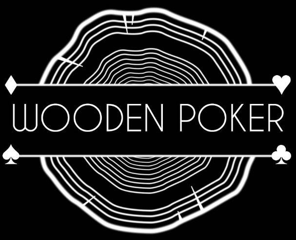

<nav class="navbar navbar-inverse navbar-fixed-top" role="navigation">
    <div class="container">
        <div class="navbar-header pull-right">

        </div>
        <a class="navbar-brand "> </a>
        <div id="navbar" class="collapse navbar-collapse">

        </div><!--/.nav-collapse -->
    </div>
</nav>

<style>
    .navbar-inverse {
        background: #000;
        height: 80px;
    }
    .navbar-inverse .navbar-nav > li > a {
        color: #fff;
        border-bottom-color: transparent;
    }
    .navbar-nav.navbar-right:last-child {
        margin-right: 0px;
    }
    img.logo-bar {

        max-height: 80px;
        max-width: 80px;
        margin-top: -30px;
        transform: translateX(-50%);
        left: 50%;
        position: absolute;
    }
    .navbar-brand {
        padding: 5px 0px;
    }

    /*h3{*/
        /*color:white;*/
    /*}*/

</style>